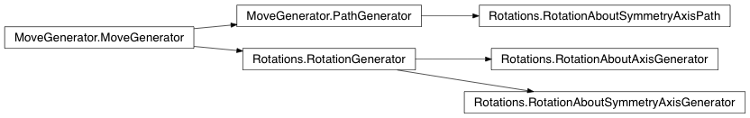
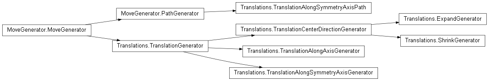

fullrmc.Generators package¶
Rotations¶
Rotations contains all rotation like MoveGenerator classes.

- class fullrmc.Generators.Rotations.RotationAboutAxisGenerator(group=None, amplitude=0.5, axis=0)¶
Bases: fullrmc.Generators.Rotations.RotationGenerator
Generates random rotational moves upon groups of atoms about a pre-defined axis.
Parameters: - group (None, Group): The group instance.
- amplitude (number): The maximum allowed rotation angle in degrees.
- axis (list,set,tuple,numpy.ndarray): The rotational axis vector.
- axis¶
Get rotation axis.
- set_axis(axis)¶
Sets the axis along which the rotation will be performed.
Parameters: - axis (list,set,tuple,numpy.ndarray): The rotation axis vector.
- transform_coordinates(coordinates, argument=None)¶
rotate coordinates.
Parameters: - coordinates (np.ndarray): The coordinates on which to apply the rotation.
- argument (object): Any python object. Not used in this generator.
Returns: - coordinates (np.ndarray): The new coordinates after applying the rotation.
- class fullrmc.Generators.Rotations.RotationAboutSymmetryAxisGenerator(group=None, amplitude=2, axis=0)¶
Bases: fullrmc.Generators.Rotations.RotationGenerator
Generates random rotational moves upon groups of atoms about one of their symmetry axis.
Parameters: - group (None, fullrmc.Engine): The constraint fullrmc engine.
- amplitude (number): The maximum rotation angle in degrees.
- axis (integer): Must be 0,1 or 2 for respectively the main, secondary or tertiary symmetry axis
- axis¶
Get rotation axis index.
- set_axis(axis)¶
Sets the symmetry axis index to rotate about.
Parameters: - axis (integer): Must be 0,1 or 2 for respectively the main, secondary or tertiary symmetry axis
- transform_coordinates(coordinates, argument=None)¶
Rotate coordinates.
Parameters: - coordinates (np.ndarray): The coordinates on which to apply the rotation.
- argument (object): Any python object. Not used in this generator.
Returns: - coordinates (np.ndarray): The new coordinates after applying the rotation.
- class fullrmc.Generators.Rotations.RotationAboutSymmetryAxisPath(group=None, axis=0, path=None, randomize=False)¶
Bases: fullrmc.Core.MoveGenerator.PathGenerator
Generates rotational moves upon groups of atoms about one of their symmetry axis.
Parameters: - group (None, fullrmc.Engine): The constraint fullrmc engine.
- axis (integer): Must be 0,1 or 2 for respectively the main, secondary or tertiary symmetry axis.
- path (List): list of angles.
- randomize (boolean): Whether to pull moves randomly from path or pull moves in order at every step.
- axis¶
Get rotation axis index.
- check_group(group)¶
Checks the generator’s group.
Parameters: - group (Group): the Group instance.
- check_path(path)¶
Checks the generator’s path.
Parameters: - path (None, list): The list of moves.
- normalize_path(path)¶
Transforms all path angles to radian.
Parameters: - path (list): The list of moves.
Returns: - path (list): The list of moves.
- set_axis(axis)¶
Sets the symmetry axis index to rotate about.
Parameters: - axis (integer): Must be 0,1 or 2 for respectively the main, secondary or tertiary symmetry axis
- transform_coordinates(coordinates, argument)¶
Rotate coordinates.
Parameters: - coordinates (np.ndarray): The coordinates on which to apply the rotation.
- argument (object): The rotation angle.
Returns: - coordinates (np.ndarray): The new coordinates after applying the rotation.
- class fullrmc.Generators.Rotations.RotationGenerator(group=None, amplitude=2)¶
Bases: fullrmc.Core.MoveGenerator.MoveGenerator
Generates random rotational moves upon groups of atoms.
Parameters: - group (None, Group): The group instance.
- amplitude (number): the maximum rotation angle allowed in degrees.
- amplitude¶
Get the maximum allowed angle of rotation in rad.
- check_group(group)¶
Checks the generator’s group.
Parameters: - group (Group): the Group instance.
- set_amplitude(amplitude)¶
Sets maximum rotation angle in degrees and transforms it to rad.
Parameters: - amplitude (number): the maximum allowed rotation angle in degrees.
- transform_coordinates(coordinates, argument=None)¶
Rotate coordinates.
Parameters: - coordinates (np.ndarray): The coordinates on which to apply the rotation
- argument (object): Any python object. Not used in this generator.
Returns: - coordinates (np.ndarray): The new coordinates after applying the rotation.
- fullrmc.Generators.Rotations.generate_random_float()¶
random() -> x in the interval [0, 1).
Translations¶
Translations contains all translation like MoveGenerator classes.


a) Random translation vectors generated from origin. (TranslationGenerator) |

b) Random translation vectors generated from origin along axis. (TranslationAlongAxisGenerator) |

a) Random translation vectors generated along the symmetry axis of a group of atoms and applied on all the group atoms at the same time. (TranslationAlongSymmetryAxisGenerator) |
- class fullrmc.Generators.Translations.ExpandGenerator(group=None, center=None, amplitude=0.1, randomize=False)¶
Bases: fullrmc.Generators.Translations.TranslationCenterDirectionGenerator
Generates random translation of atoms in a group away from group center.
- class fullrmc.Generators.Translations.ShrinkGenerator(group=None, center=None, amplitude=0.1, randomize=False)¶
Bases: fullrmc.Generators.Translations.TranslationCenterDirectionGenerator
Generates random translation of atoms in a group towards the group center.
- class fullrmc.Generators.Translations.TranslationAlongAxisGenerator(group=None, amplitude=0.2, axis=(1, 0, 0))¶
Bases: fullrmc.Generators.Translations.TranslationGenerator
Generates random translation moves upon groups of atoms along a pre-defined axis.
Parameters: - group (None, fullrmc.Engine): The constraint RMC engine.
- amplitude (number): The maximum allowed translation amplitude in Angstroms.
- axis (list,set,tuple,numpy.ndarray): The translation axis vector.
- axis¶
Get translation axis.
- set_axis(axis)¶
Sets the axis along which the translation will be performed.
Parameters: - axis (list,set,tuple,numpy.ndarray): The translation axis vector.
- transform_coordinates(coordinates, argument=None)¶
translates coordinates.
Parameters: - coordinates (np.ndarray): The coordinates on which to apply the translation.
Returns: - coordinates (np.ndarray): The new coordinates after applying the translation.
- argument (object): Any python object. Not used in this generator.
- class fullrmc.Generators.Translations.TranslationAlongSymmetryAxisGenerator(group=None, amplitude=0.2, axis=0)¶
Bases: fullrmc.Generators.Translations.TranslationGenerator
Generates random translation moves upon groups of atoms along one of their symmetry axis.
Parameters: - group (None, Group): The group instance.
- amplitude (number): the maximum translation angle in Angstroms.
- axis (integer): Must be 0,1 or 2 for respectively the mains, secondary or tertiary symmetry axis.
- axis¶
Get translation axis index.
- set_axis(axis)¶
Sets the symmetry axis index to translate along.
Parameters: - axis (integer): Must be 0,1 or 2 for respectively the main, secondary or tertiary symmetry axis
- transform_coordinates(coordinates, argument=None)¶
translate coordinates.
Parameters: - coordinates (np.ndarray): The coordinates on which to apply the translation.
Returns: - coordinates (np.ndarray): The new coordinates after applying the translation.
- argument (object): Any python object. Not used in this generator.
- class fullrmc.Generators.Translations.TranslationAlongSymmetryAxisPath(group=None, axis=0, path=None, randomize=False)¶
Bases: fullrmc.Core.MoveGenerator.PathGenerator
Generates translation moves upon groups of atoms along one of their symmetry axis.
Parameters: - group (None, Group): The group instance.
- axis (integer): Must be 0,1 or 2 for respectively the main, secondary or tertiary symmetry axis
- path (List): list of distances.
- randomize (boolean): Whether to pull moves randomly from path or pull moves in order at every step.
- axis¶
Get translation axis index.
- check_group(group)¶
Checks the generator’s group.
Parameters: - group (Group): the Group instance.
- check_path(path)¶
Checks the generator’s path.
Parameters: - path (None, list): The list of moves.
- normalize_path(path)¶
Transforms all path distances to floating numbers.
Parameters: - path (list): The list of moves.
Returns: - path (list): The list of moves.
- set_axis(axis)¶
Sets the symmetry axis index to translate along.
Parameters: - axis (integer): Must be 0,1 or 2 for respectively the main, secondary or tertiary symmetry axis
- transform_coordinates(coordinates, argument)¶
Rotate coordinates.
Parameters: - coordinates (np.ndarray): The coordinates on which to apply the translation.
Returns: - coordinates (np.ndarray): The new coordinates after applying the translation.
- argument (float): The move distance.
- class fullrmc.Generators.Translations.TranslationCenterDirectionGenerator(group=None, center=None, amplitude=0.1, randomize=False)¶
Bases: fullrmc.Generators.Translations.TranslationGenerator
Generates random translation moves of every atom of the group along its direction vector to the geometric center of the group.
Parameters: - group (None, Group): The group instance.
- center (None, numpy.array): The center value. If None, then center is calculated as the center of geometry of group atoms. If numpy.array of indexes than center is calculated as the center of geometry of the given atoms indexes. If numpy.array of three float numbers, it is then considered the center.
- amplitude (number): The maximum translation amplitude in Angstroms.
- randomize (boolean): Whether randomize the amplitude and direction (towards or away from center) of translation of every atom in the group.
- center¶
Get the center value.
- randomize¶
Get randomize value.
- set_center(center)¶
Sets center value.
Parameters: #. center (None, numpy.array): The center value. If None, then center is calculated as the center of geometry of group atoms. If numpy.array of indexes than center is calculated as the center of geometry of the given atoms indexes. If numpy.array of three float numbers, it is then considered the center.
- set_randomize(randomize)¶
Sets randomize flag value.
Parameters: - randomize (boolean): Whether randomize the amplitude and direction (towards or away from center) of translation of every atom in the group.
- transform_coordinates(coordinates, argument=None)¶
Translate coordinates.
Parameters: - coordinates (np.ndarray): The coordinates on which to apply the translation.
Returns: - coordinates (np.ndarray): The new coordinates after applying the translation.
- argument (object): Any python object. Not used in this generator.
- class fullrmc.Generators.Translations.TranslationGenerator(group=None, amplitude=0.2)¶
Bases: fullrmc.Core.MoveGenerator.MoveGenerator
Generates random translations moves upon groups of atoms.
Parameters: - group (None, Group): The group instance.
- amplitude (number): The maximum translation amplitude in Angstroms.
- amplitude¶
- check_group(group)¶
Checks the generator’s group.
Parameters: - group (Group): the Group instance.
- set_amplitude(amplitude)¶
Sets maximum translation vector allowed amplitude.
Parameters: - amplitude (number): the maximum allowed translation vector amplitude.
- transform_coordinates(coordinates, argument=None)¶
Translate coordinates.
Parameters: - coordinates (np.ndarray): The coordinates on which to apply the translation.
Returns: - coordinates (np.ndarray): The new coordinates after applying the translation.
- argument (object): Any python object. Not used in this generator.
- fullrmc.Generators.Translations.generate_random_float()¶
random() -> x in the interval [0, 1).